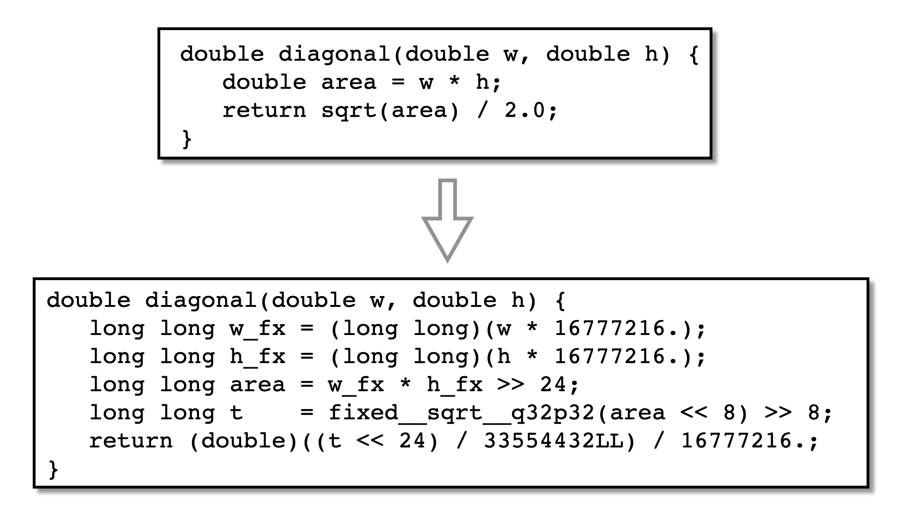

The integer obfuscators — EncodeArithmetic, EncodeData
— cannot see floating-point code. LowerType makes it visible to
them: its float2fixed converter rewrites a function's float and
double computation as fixed-point integer arithmetic in a chosen
Q-format. The function's parameters and return value stay floating point,
converted at entry and at the return, so its callers are unchanged.
| Option | Arguments | Description |
|---|---|---|
| --Transform | LowerType | Type-directed lowering of a value's representation. The float2fixed converter replaces the floating-point locals and parameters of a function with fixed-point integers (a Q-format), rewriting the floating-point arithmetic as integer operations and routing transcendental calls (sqrt, log10, exp, pow, hypot, fabs, fmin, fmax, floor, ceil, round, ...); a lowered value cast to an integer (e.g. (int)floor(x) for an index) becomes its integer part to the embedded libFixed library. The result is integer code that the integer obfuscators (EncodeArithmetic, EncodeData) can then protect. A function's parameters and return value stay floating-point (they are converted at entry and return -- the ABI boundary), and lowered variables are declared with a distinctive typedef PREFIX_FIXED_Q<m>p<n> so a reviewer can see which values were converted. Fixed point is a bounded-range, approximate representation; the transform refuses rather than mis-lower on constructs it does not yet handle (written floating-point globals, escaping local float buffers). A call to an un-routed callee crosses the value boundary (its float arguments are decoded and any lowered result re-encoded), so lowered code composes with printf, helpers, and libm. Local float arrays are lowered in place when their address does not escape. Floating-point pointer parameters (double *buf) are lowered at the value boundary -- loads encode / stores decode -- so the interior algorithm is protected while the pointee stays IEEE. |
| --LowerTypeConvert | float2fixed | Which conversion to apply. Default=float2fixed.
|
| --LowerTypeType | float, double, all | Which source floating-point type(s) to lower. Under the same-width rule a float lowers to a 32-bit container and a double to a 64-bit container. Default=all.
|
| --LowerTypeFixedFraction | INTSPEC | The number of fraction bits n for the float2fixed converter; the Q-format is Q(width-n)p(n) (e.g. 24 gives Q40p24 in a 64-bit container: range about +/-2^15, resolution 2^-24). Larger n is more precise but narrows the representable range. The default (24, Q40p24) keeps multiply/divide within int64 so no 128-bit widening is needed (see below). Default=24. |
| --LowerTypeFixedBits | INTSPEC | The container width in bits for the float2fixed converter: 64 (an int64 container, the default) or 32 (an int32 container). A 32-bit container is the same size as a C float, so lowering float storage (locals, buffers, struct fields) keeps its layout size-safe -- a float[N] becomes an int32[N] of the same footprint. It halves the memory of lowered data and is friendlier to 32-bit targets, at a narrower range/precision: with Q16.16 (--LowerTypeFixedFraction=16) the range is about +/-2^15 with resolution 2^-16. A 32-bit container always widens multiply/divide through int64 (so --Allow128BitInts does not apply), and it cannot host the Q32.32 libFixed transcendental tier, so any routed sqrt/exp/... falls back to the value boundary (a cleartext libm call on the decoded double) instead. The fraction must satisfy 1 <= n < bits. Default=64. |
| --LowerTypeBoundary | refuse, convert | What to do at a frontier that cannot be lowered in place -- a written shared global, or a local whose address escapes. It does not affect truly un-representable constructs (infinity/NaN, a :region qualifier, an unsupported expression), which are refused under either policy. Default=convert.
|
| --LowerTypeSpecials | refuse, exclude, sentinel, saturate | How a lowered function that constructs or classifies a special value (infinity / NaN via INFINITY, NAN, isnan, isinf, ...) is handled. Fixed-point has no infinity or NaN, so this is the dedicated policy axis for them (independent of --LowerTypeBoundary, which governs the memory/ABI frontiers). A system inf/NaN helper the function set sweeps in is never lowered regardless of this setting. Default=exclude.
|
| --LowerTypeInline | BOOLSPEC | Inline the embedded libFixed transcendental helpers (and their integer dependencies) into the caller, transitively, so the fixed-point approximation's integer arithmetic (shifts, multiplies, the polynomial evaluation) is exposed rather than hidden behind a call. This lets a following EncodeArithmetic obfuscate it and the C compiler optimise it; the now-unused library definitions can be dropped with --Transform=CleanUp --CleanUpKinds=removeUnusedFunctions. Turn it off to keep the transcendentals as calls. Default=true. |
Before:
double diagonal(double w, double h) {
double area;
area = w * h;
return sqrt(area) / 2.0;
}
After --LowerTypeConvert=float2fixed --LowerTypeFixedFraction=24. The
arguments are converted to Q40.24 on entry, the multiply and divide carry the
Q-format scaling, sqrt becomes a call into the embedded
libFixed, and the result is converted back:
typedef long long PREFIX_FIXED_Q40p24;
double diagonal(double w, double h) {
PREFIX_FIXED_Q40p24 area, t, w_fx, h_fx;
w_fx = (long long)(w * 16777216.);
h_fx = (long long)(h * 16777216.);
area = w_fx * h_fx >> 24;
t = fixed__sqrt__q32p32__relerr_0p000001(area << 8) >> 8;
return (double)((t << 24) / 33554432LL) / 16777216.;
}
Lowered variables get the distinctive typedef
PREFIX_FIXED_Q<m>p<n>, so a reviewer can see which values
were converted and in what format.
+ and - are plain integer ops, *
and / apply the Q-format scaling, and comparisons are direct integer
compares (a Q-format is linear and monotone).
sqrt, hypot, log,
exp, pow, sin, cos, floor,
round, and friends — are routed to the embedded
libFixed. (int)floor(x) becomes the integer part.
printf, un-lowered helpers, and non-routed libm.
The Q-format is Q(width-n)p(n), chosen with
--LowerTypeFixedFraction=n: more fraction bits buy resolution
(2^-n) and cost range. Multiply and divide need a widening
intermediate, and whether that may be a 128-bit integer is a property of the
target, not of this transform — so it comes from the global
--Allow128BitInts, which defaults to what the machine model says the
target has. Where a 128-bit integer is available the widening is exact for any
in-range value; where it is not, the arithmetic stays in 64 bits and the
fraction must be chosen so the products fit in int64.
Two cases are worth setting the flag off by hand even though the target does
have the type: WebAssembly, where clang does provide __int128
but lowers a multiply or divide to a __multi3 / __udivti3
library call, and any function you intend to --Transform=Jit or
Virtualize afterwards.
Run LowerType before an integer obfuscator, which can then protect the
now-integer computation:
tigress --Transform=LowerType --LowerTypeConvert=float2fixed \
--LowerTypeFixedFraction=24 --Functions=diagonal \
--Transform=EncodeArithmetic --Functions=diagonal \
in.c --out=out.c
Fixed point is a bounded-range, approximate representation, so
LowerType suits tolerant code — measurement, thresholds,
geometry, simulation — not bit-exact IEEE work. Rather than mis-lower it
refuses what it cannot yet handle: a written float global still reachable
from un-lowered code, escaping float struct fields, a local float buffer whose
address escapes (external code would read the container integers as doubles),
and unsupported callees. Pointer-referenced memory is a boundary, not an escape
— but the pointee values themselves are not obfuscated; that needs the
whole-program mode.
LowerType preserves the atomic-region and barrier annotations other
transforms leave behind, and inserts its own entry conversions through the same
mechanism, so it composes safely in a pipeline. Because lowering is
type-directed and function-granular — a variable's type spans the whole
function — a --Functions=f:region qualifier cannot be honoured
and is refused rather than silently widened.